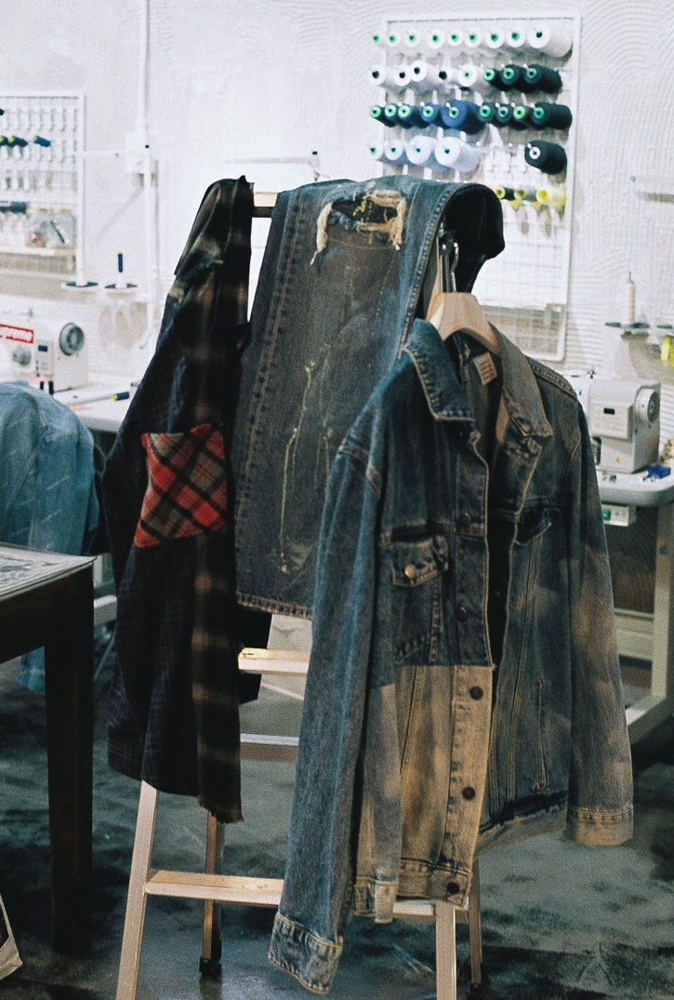
내가 하는 작업은 아트보다는 공예에 가깝다.
좋은 것을 공유하고 싶은 철학이 있을 뿐이다.
좋은 것을 공유하고 싶은 철학이 있을 뿐이다.
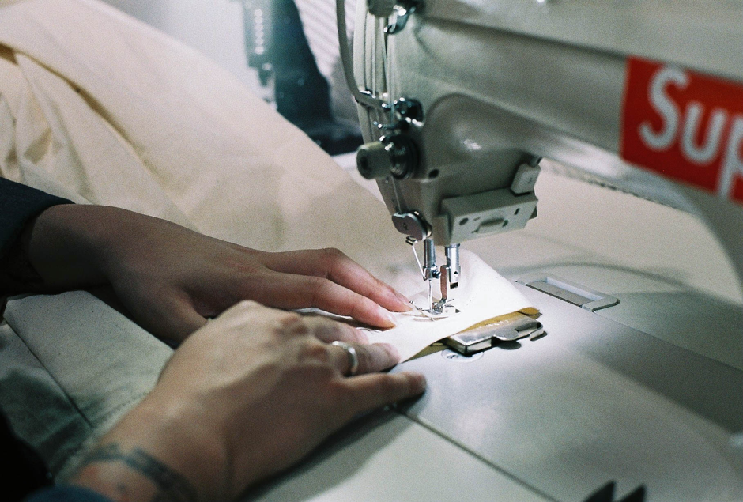
데님의 태생 자체가 워크웨어이기에
편리하고 튼튼하다는 점이 원단으로서
가장 큰 매력이다. 옷은 입으라고 있는
거지, 관상용이 아니라는 개인적인 관념
때문인지는 몰라도, 데님은 막 입고 막
세탁할수록 본연의 가치가 살아난다고
생각한다. 그런 말이 생각난다. ‘옷이 살려 달라고 할 때까지.
익숙하면서도 낯선 것,
낯선 데도 입고 싶은 것,
데님
낯선 데도 입고 싶은 것,
데님
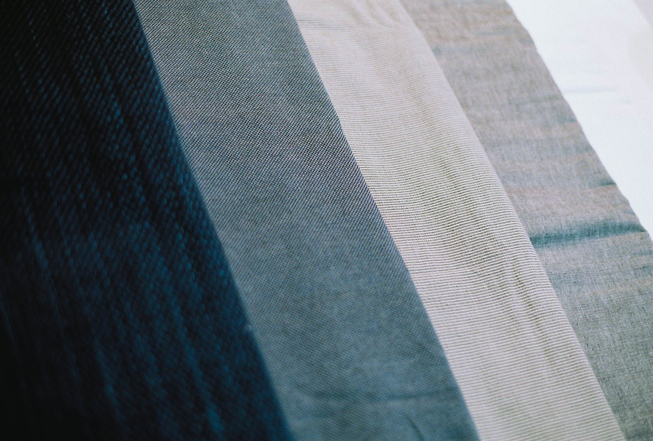
누구에게나 그렇듯 데님은 이미 익숙한 존재이다.
고등학교 2학년 때,
*누디진 :
생지를 입으며 자신만의 워싱을 만들어간다는 브랜드
친한 친구가 *누디진 제품을 보여줬는데
그 브랜드가 추구하는 가치에 흥미를 느끼고 난 이후 돈을 모아
청바지를 사기 시작했다. 데님이라는 소재는 단순한 일상복 이상이었다.
나의 일상적 흔적이 곧 워싱이 되고 패턴이 되는 소재였다.
생지를 입으며 자신만의 워싱을 만들어간다는 브랜드
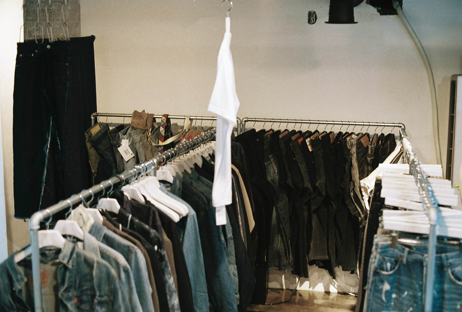
그 후, 나처럼 데님에 관심이 있는 사람들에게 데님 제품을 소개해주는
커뮤니티를 만들고 싶었다. 친구와 채팅을 하듯 24시간 언제든 답변을
해줄 수 있는 형태를 추구했다.
실제로 커뮤니티를 만들어 보려고 학교를 그만두고서 아르바이트를 통해 모은 돈 500만원으로 누디진 제품을 구매했고, 네이버카페를 개설했다.
본격적으로 리워크 작업은 친한 친구와의 대화를 통해 시작하였다. 타투이스트였던 친구에게 나는 바지를 만들어주고, 친구는 나에게 타투를 해주는 조건으로 거래를 했던 것. 당시 친구가 사고 싶다고 했던 일본 리워크 브랜드의 제품을 보니 ‘이 정도면 나도 하겠는데?’라는 생각이 들었고, 비슷하게 해냈기에 가능했다.
실제로 커뮤니티를 만들어 보려고 학교를 그만두고서 아르바이트를 통해 모은 돈 500만원으로 누디진 제품을 구매했고, 네이버카페를 개설했다.
본격적으로 리워크 작업은 친한 친구와의 대화를 통해 시작하였다. 타투이스트였던 친구에게 나는 바지를 만들어주고, 친구는 나에게 타투를 해주는 조건으로 거래를 했던 것. 당시 친구가 사고 싶다고 했던 일본 리워크 브랜드의 제품을 보니 ‘이 정도면 나도 하겠는데?’라는 생각이 들었고, 비슷하게 해냈기에 가능했다.
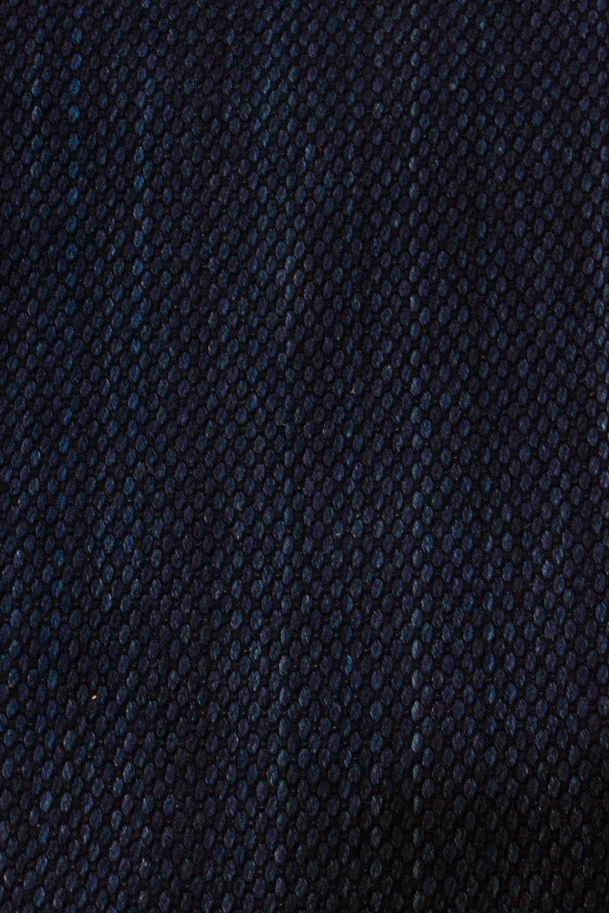
직접 만든 옷 중 특히 애착이 가는 옷이 있다. 작년 겨울에 만들었는데,
데님과 비슷한 켄이라는 원단으로 만들었다. 한 가지 원단을
사용했는데도 내가 보는 디테일들을 모두 충족한다.
그래서 절대 팔지 않을 생각이다.
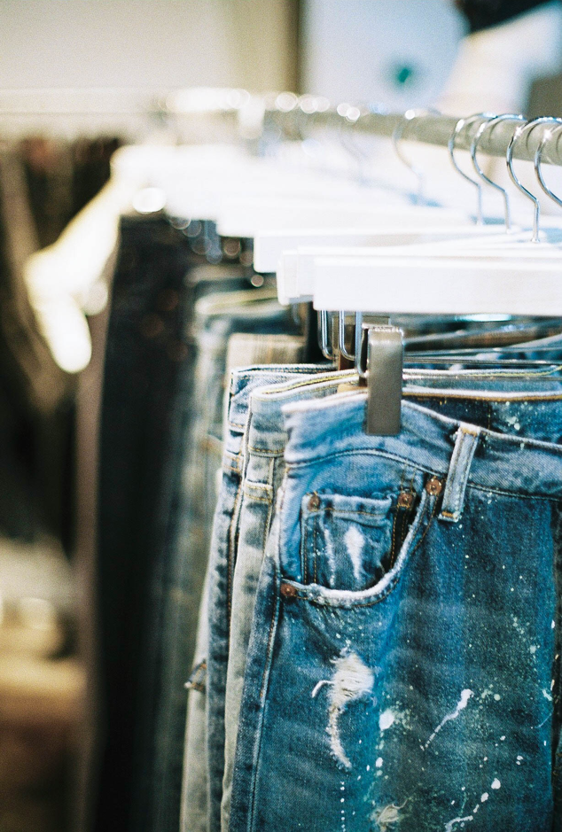
주로 만드는 건 바지이다. 사람들이 가장 까다롭게 생각하는 의류가 바지라고 생각하는데,
그만큼 핏·기장·통·허리·엉덩이와 같이 고민할 조건이 많아서 좋다. 쉽지 않아서 재미있다.
패션 디자인을 전공하지는 않았다. 그래서 디자인에 대해 터놓고 교류할 수 있는 사람이 상대적으로 적다는 점이 아쉽긴 하지만, 반대로, 디자인을 배웠으면 지금처럼 못했을 것 같다는 생각도 든다. 얽매일 만할 틀을 두지 않고, 계속해서 더 새로운 옷들을 만들고 싶다.
패션 디자인을 전공하지는 않았다. 그래서 디자인에 대해 터놓고 교류할 수 있는 사람이 상대적으로 적다는 점이 아쉽긴 하지만, 반대로, 디자인을 배웠으면 지금처럼 못했을 것 같다는 생각도 든다. 얽매일 만할 틀을 두지 않고, 계속해서 더 새로운 옷들을 만들고 싶다.
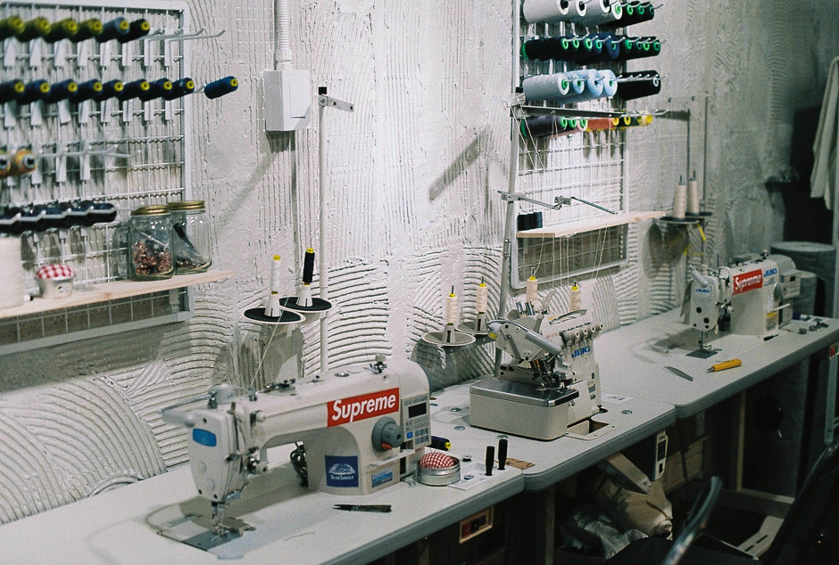
실제로 패션디자인학과에서 일반적으로 지도하는 방식과 달리, 디자인 작업을 하지 않고 바로 패턴매이킹을 시작한다.
리메이크는 기존의 것을 어느 정도 살리는 방향으로 하기 때문에 메이킹을 한번 파악하고 작업을 진행한다. 빈티지의 경우에는, 특성상 전 주인의 흔적 또한 일부라고 생각해서 최대한 살려서 작업한다.
리메이크는 기존의 것을 어느 정도 살리는 방향으로 하기 때문에 메이킹을 한번 파악하고 작업을 진행한다. 빈티지의 경우에는, 특성상 전 주인의 흔적 또한 일부라고 생각해서 최대한 살려서 작업한다.
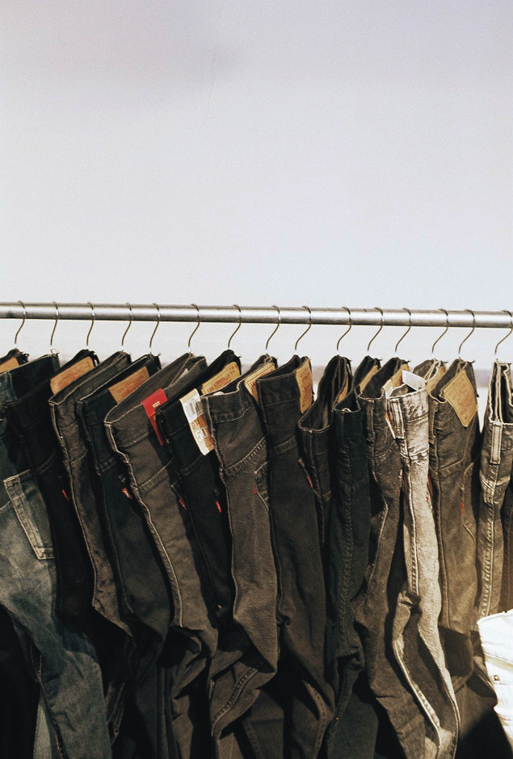
이미 존재하는 50에 나의 것을 더하여 100을 제작한다고 생각한다. 즉흥적으로 일하는 경우가 많다.
다만 스탠다드의 경우에는 0에서 100을 창작해내는 것. 내가 좋아하는 원단을 내가 좋아하는 실루엣으로 뽑아낼 수 있다는 게 장점이다.
다만 스탠다드의 경우에는 0에서 100을 창작해내는 것. 내가 좋아하는 원단을 내가 좋아하는 실루엣으로 뽑아낼 수 있다는 게 장점이다.
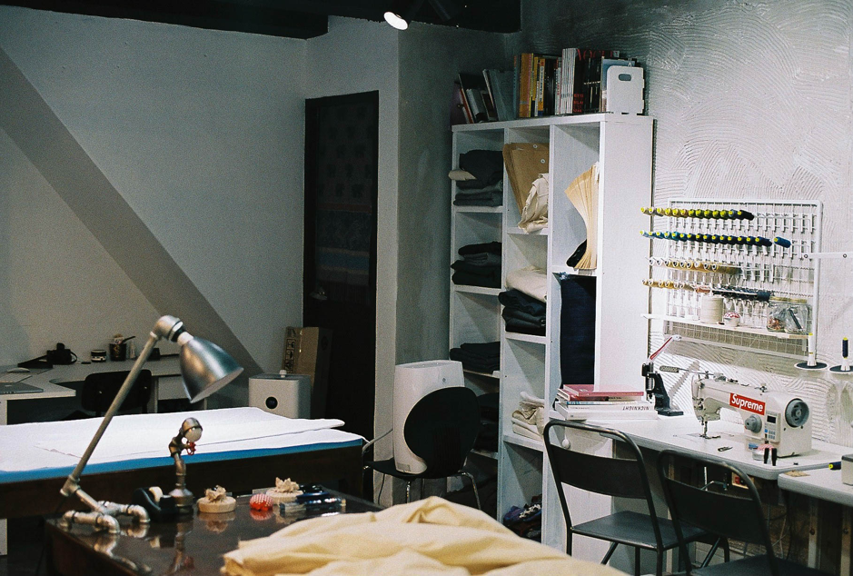
의류에 국한되지 않고, 데님으로 가구 커버도 만들어 볼 생각이다. 그래서 패치워크 가능한 원단을 조금씩 모으고 있다.
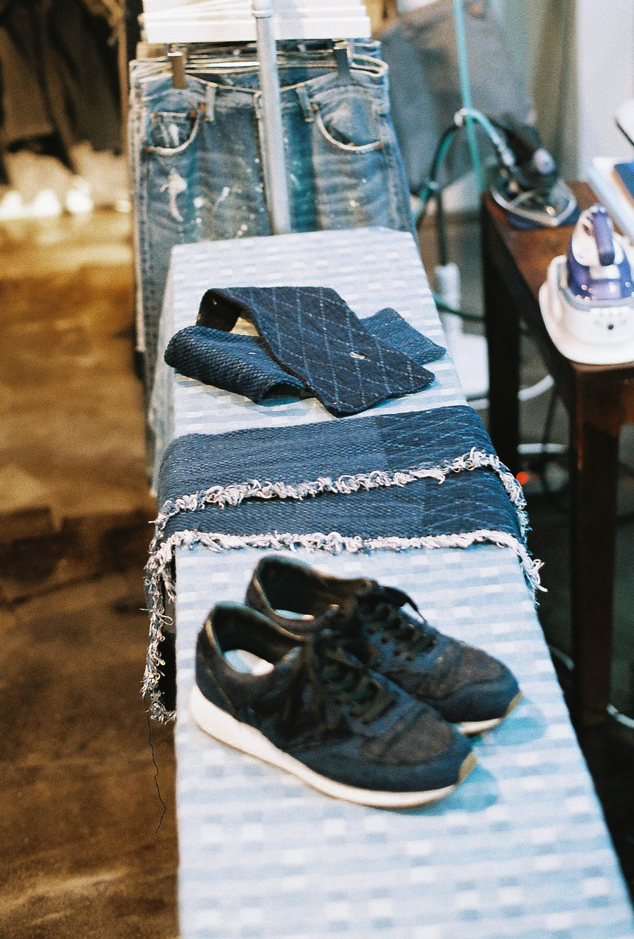
친한 여자친구가 전 남자친구가 준 아페쎄 바지를 나에게 작업용으로 쓰라며 준 적이 있다.
좋은 원단에 좋은 브랜드이지만, 디자인이 그 친구의 마음에 들지 않는다고 했다.
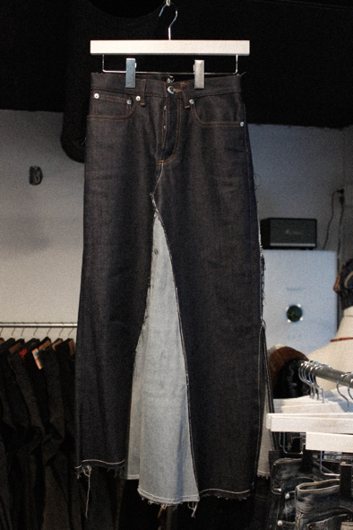
그냥 내가 쓰기보다는 친구에게 다시 선물해주면 좋겠다는 생각이 들었다.
그래서 다른 원단을 추가하여 치마로 만들어주었는데,
친구가 아주 마음에 들어 해서, 수선까지 맡겨야 할 정도로 자주 입었다.
정작 본품은 한 번도 입지 않았다는 사실을 알기 때문에 더 뿌듯했다.
좋은 영향을 주는 브랜드를 만들고, 좋은 영향을 주는 사람이고 싶다. 옷으로 애티튜트가 정해진다고 생각하기 때문에, 내 옷을 입은 사람이 편한 행동을 하고 편한 마음을 가졌으면 좋겠다. 계속 경험해보고 싶은 매력을 지닌 브랜드를 만들고 그런 사람이 되고 싶다.
좋은 영향을 주는 브랜드를 만들고, 좋은 영향을 주는 사람이고 싶다. 옷으로 애티튜트가 정해진다고 생각하기 때문에, 내 옷을 입은 사람이 편한 행동을 하고 편한 마음을 가졌으면 좋겠다. 계속 경험해보고 싶은 매력을 지닌 브랜드를 만들고 그런 사람이 되고 싶다.
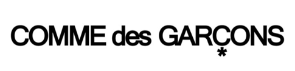
좋아하는 브랜드 : 꼼데가르송, 캐피탈, 오라리, 드리스반노튼.
이들의 공통점을 꼽자면 ‘대체불가한 매력’이라고 생각한다.
그런 좋은 본질만을 담으려 ‘미니멀’해지려고 노력하고 있다. 0에서부터 100까지 빠짐 없이 꽉 채우기 보다는, 하나의 원석에서 불순물과 같이 불필요한 요소들을 제거해가고자 한다. 그것이 내가 바라는 미니멀이다.
(리빌디스트)라는 브랜드를 준비하고 있다. Build에 ‘Re’를 붙인 이유는, 기존의 것에 지친 사람들에게 나의 관점으로 재해석한 것을 지어주겠다는 의미를 담기 위해서이다.
Build라는 단어를 좋아하는데, 옷을 만드는 과정이 건물을 짓는 것과 비슷하다고 생각하기 때문이다. 사람의 육체에 옷이 얹어지는 과정과 땅 위에 건물이 세워지는 것이 크게 다르지 않게 느껴진다. 그래서인지 건축분야 출신의 디자이너를 좋아한다.
그런 좋은 본질만을 담으려 ‘미니멀’해지려고 노력하고 있다. 0에서부터 100까지 빠짐 없이 꽉 채우기 보다는, 하나의 원석에서 불순물과 같이 불필요한 요소들을 제거해가고자 한다. 그것이 내가 바라는 미니멀이다.
(리빌디스트)라는 브랜드를 준비하고 있다. Build에 ‘Re’를 붙인 이유는, 기존의 것에 지친 사람들에게 나의 관점으로 재해석한 것을 지어주겠다는 의미를 담기 위해서이다.
Build라는 단어를 좋아하는데, 옷을 만드는 과정이 건물을 짓는 것과 비슷하다고 생각하기 때문이다. 사람의 육체에 옷이 얹어지는 과정과 땅 위에 건물이 세워지는 것이 크게 다르지 않게 느껴진다. 그래서인지 건축분야 출신의 디자이너를 좋아한다.
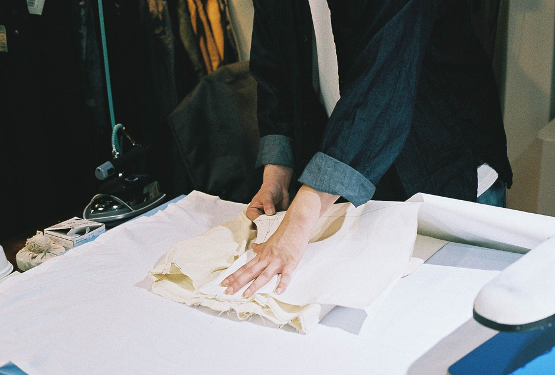
비싼 옷보다는 좋은 옷을 보여주고 싶다. 잘하는 브랜드가 되고 싶다.
그렇기 때문에 실, 원단, 주머니 원단, 버튼 등 어느 하나의 품질도 포기할 수 없다.
전시를 한 적이 있다. 앞으로는 전시보다는 팝업스토어 형식으로 판매도 진행할 수 있도록 구상하려 한다. 전시에서 내 제품을 보고 사람들이 신기하다고 반응하는 것을 보며 뿌듯함을 느끼는 데서 더 나아가, 내가 만든 옷을 사람들이 직접 입어보고 즐길 수 있게 하는 일에서 가치를 만들어 보고 싶다.
전시를 한 적이 있다. 앞으로는 전시보다는 팝업스토어 형식으로 판매도 진행할 수 있도록 구상하려 한다. 전시에서 내 제품을 보고 사람들이 신기하다고 반응하는 것을 보며 뿌듯함을 느끼는 데서 더 나아가, 내가 만든 옷을 사람들이 직접 입어보고 즐길 수 있게 하는 일에서 가치를 만들어 보고 싶다.


 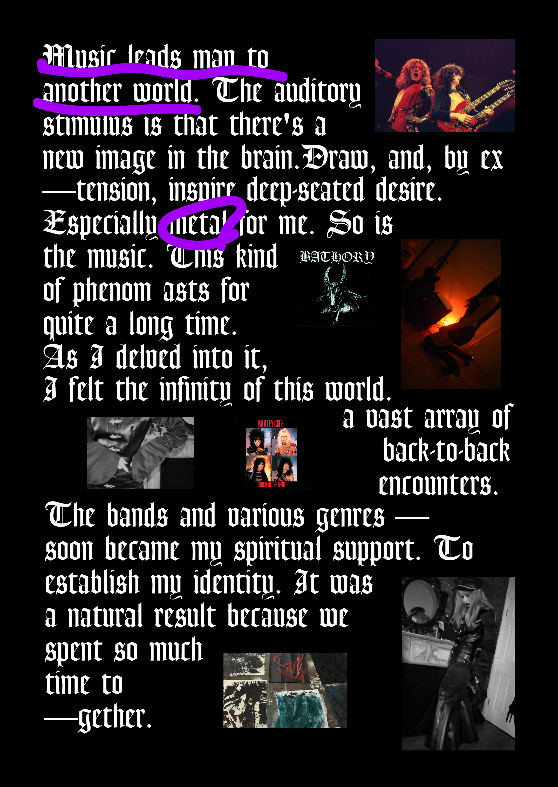
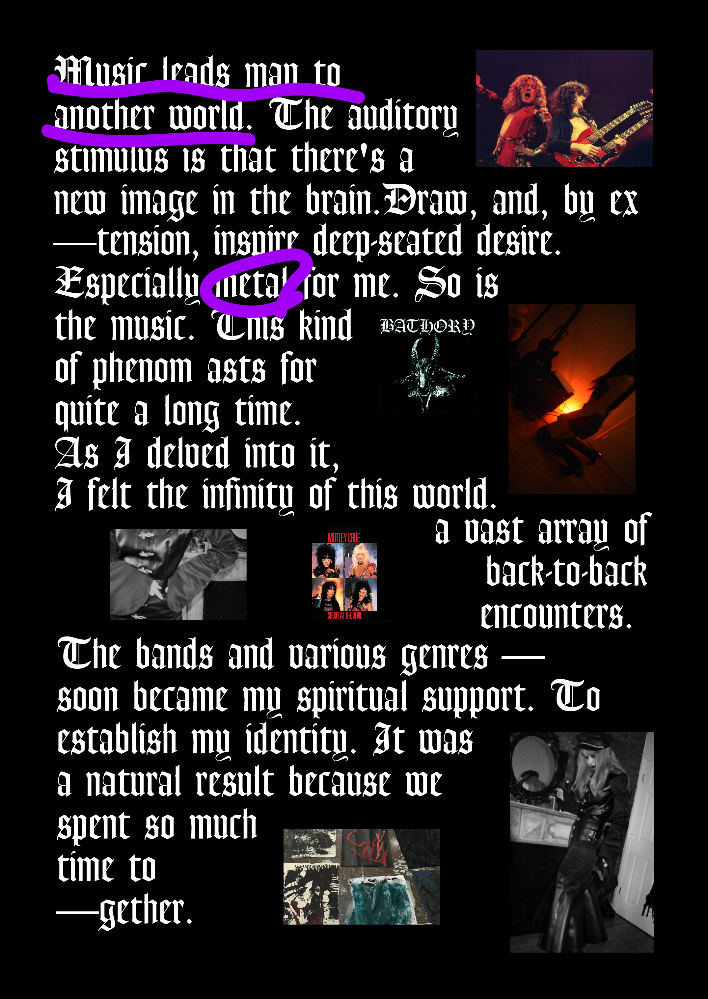